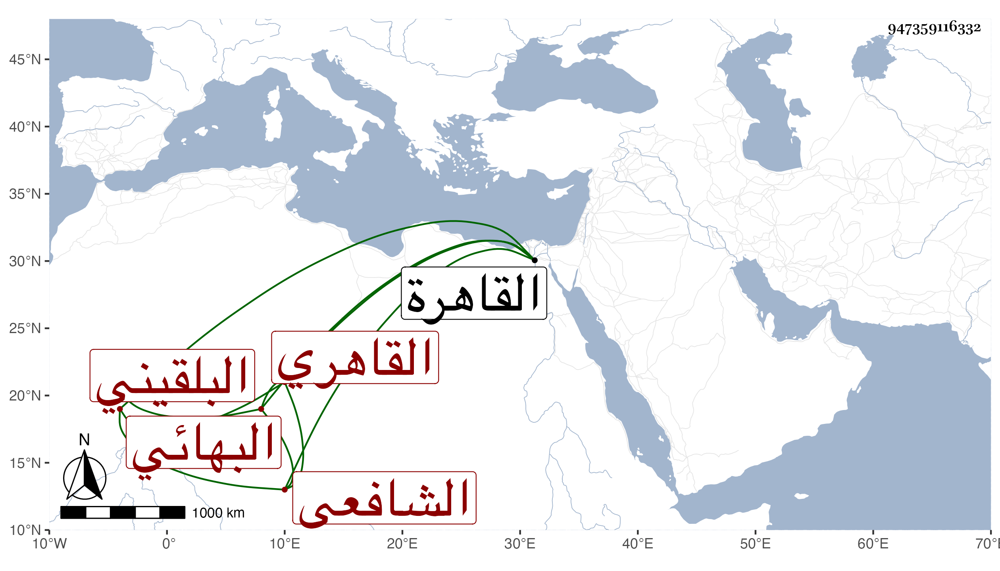

0902Sakhawi.DawLamic.ITO20230111-ara1.EIS1600.947359116332
Biography ID: 947359116332
684
محمد بن صلح بن عمر بن رسلان فتح الدين أبو الفتح بن العلم البلقيني الأصل القاهري البهائي الشافعي أخو الذي قبله وهو بلقبه أشهر . ولد في يوم الأربعاء حادي عشر جمادى الثانية سنة خمس وأربعين وثمانمائة بالقاهرة وأمه ابنة ابن باشا أم الصلاح المكيني فهو أخوه لأمه ، ونشأ في كنف أبويه فحفظ القرآن وصلى به في مدرستهم وعمدة الأحكام والتدريب لجده وتكملته لأبيه وألفية ابن ملك وقطعة من ابن الحاجب ، وحضر عند أبيه قليلا بل كان بأخرة يقرأ بين يديه في الخشابية وغيرها وكذا أخذ في النحو قليلا عن إبراهيم الحلبي وفي الفرائض عن البوتيجي وفي الأصول عن الكافياجي وفي المنطق والعربية عن التقي الحصني ، كل ذلك قليلا بالهوينا ، وعرف بالذكاء ، وأضيف إليه في أيام أبيه أشياء بل ناب عنه في القضاء وبعده استقر في الخشابية والشريفية والقانبيهية والبرقوقية وغيرها شريكا لغيره بعد أن شهد ابن الفالاتي وابن قاسم بأهليته وباشرها وقرأ ابن قاسم بين يديه الحديث قليلا ثم انقطع ، ولو توجه للاشتغال وترك مخالطة من يحمله على ما لا يليق ببيتوتة بحيث خرج عن حده وترك طريق أبيه وجده وجر ذلك لتكليفه مالا حين أمسك على هيئة غير مرضية لرجي له الخير وقد عذلته غير مرة وأفاد التستر قليلا مع احتفاف قرناء السوء به وآل أمره مع عدم انفكاكه عمالا يرتضي إلى استكمال الوظائف المشار إليها مع قضاء العسكر وغيره بعد موت شريكه أبي السعادات في ربيع الأول سنة تسعين بكليفة إلا القانبيهية فإنهما كانا نزلا عنها . وقال الشهاب الطوخي فيه :
| لقد فتح الله العظيم على اورى | بأعظم فتح وهو أكرم فاتح |
| وولي عليهم ذا المكارم والحجى | ولا بدع في ذا إنه سر صالح |
وبالجملة فكان ساكنا مداريا وهو في آخر عمره أحسن منه قبله سيما بعد موت المشار إليه فإنه بالغ في التودد والإحسان إلى الطلبة بالتقرير وغيره ولكنه لم يمتع ، بل مات عن قرب في غروب يوم الجمعة ثامن رجب سنة اثنتين وتسعين وصلى عليه من الغد بجامع الحاكم ودفن بمدرستهم ، واستقر بعده في الخشابية والشريفية وقضاء العسكر ببذل كثير ابن أخيه لأمه رحمه الله وعفا عنه وإيانا .
